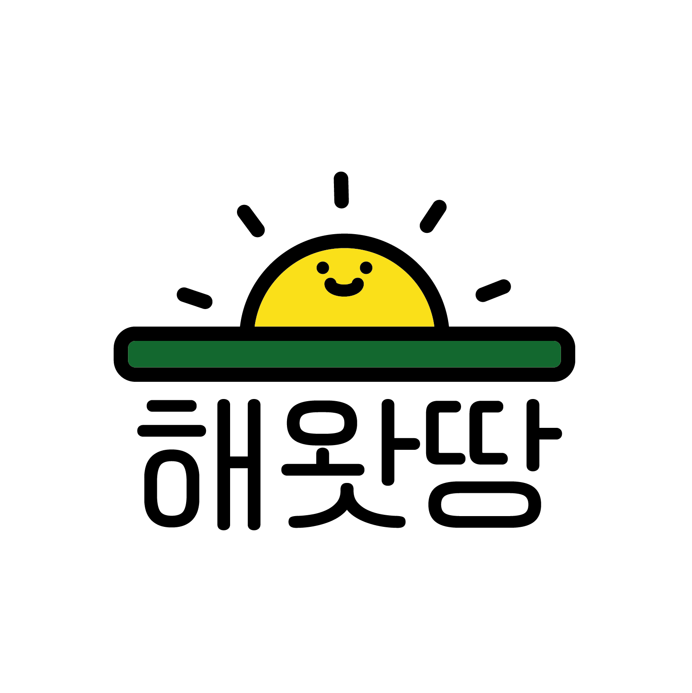
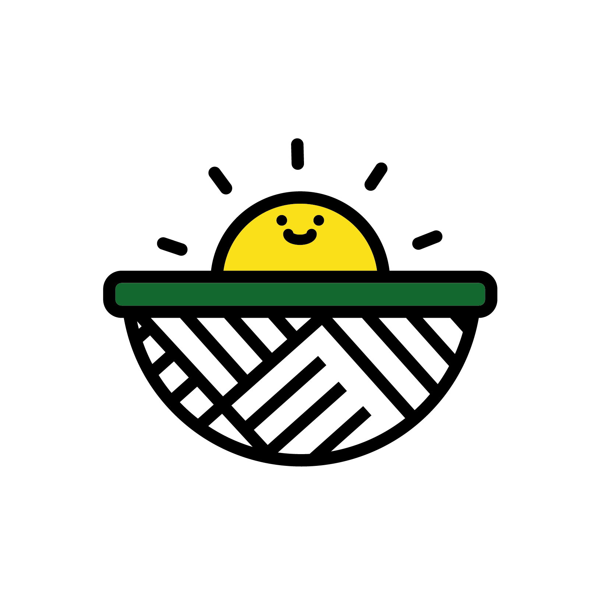
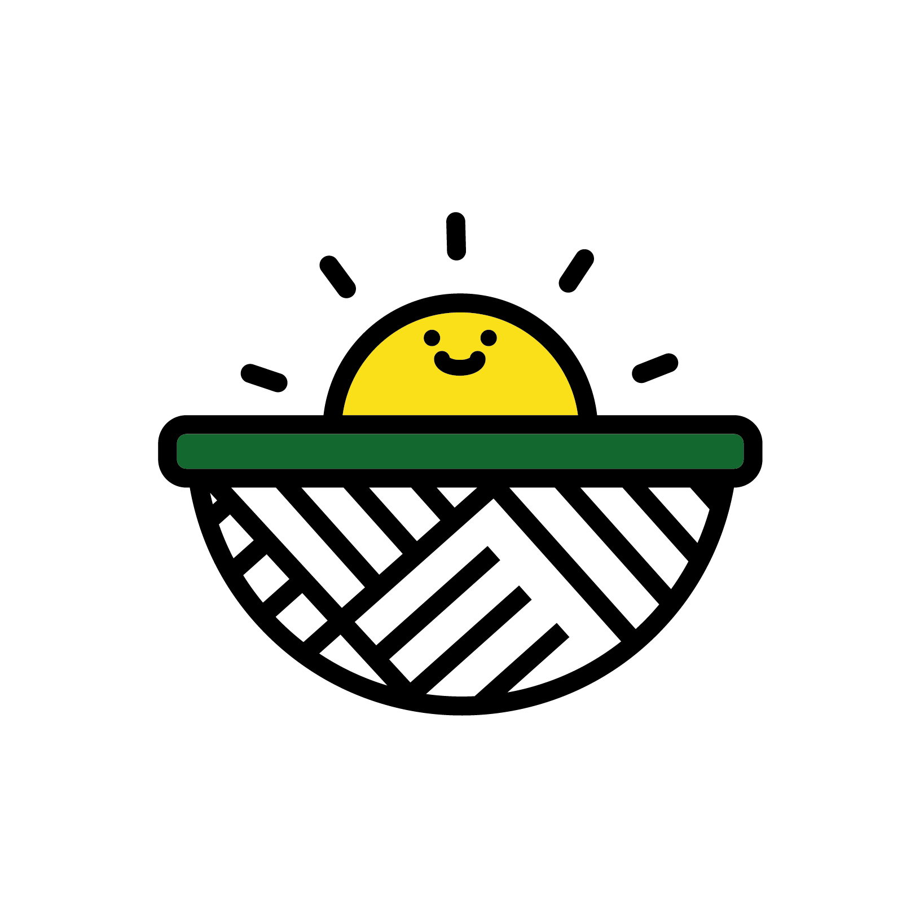

해와 땅 사이를 잇는 사람들,
해왓땅
해왓땅
해왓땅 brand experience design
desinged by team see sun
@2021 M3
 INFO
INFO
프로젝트 해왓땅은 농산물 소비자와 농민과의
상생을 통해
지속가능한 농업을 이루는 프로젝트입니다.
consumer
producter
NAMING
'해왓땅'이라는 이름은
해와 땅과 제주도 방언 왓(밭)이
합쳐져 만들어진 이름입니다.
밭 이라는 공간에서 해와 땅이 함께
농산물을 만들어준다는 뜻과
소비자와 생산자가 협력해서
지속가능한 농업을 할 수 있도록
도와준다는 의미를 지니고 있습니다.
해와 땅과 제주도 방언 왓(밭)이
합쳐져 만들어진 이름입니다.
밭 이라는 공간에서 해와 땅이 함께
농산물을 만들어준다는 뜻과
소비자와 생산자가 협력해서
지속가능한 농업을 할 수 있도록
도와준다는 의미를 지니고 있습니다.
OVERVIEW
브랜딩 프로젝트를 통해
해왓땅이라는 이름이 지어진
네이밍 과정부터
철학, 브랜드 메뉴얼까지
프로젝트의 정체성을
브랜딩하였습니다.
해왓땅이라는 이름이 지어진
네이밍 과정부터
철학, 브랜드 메뉴얼까지
프로젝트의 정체성을
브랜딩하였습니다.
LOGO TYPE

 
